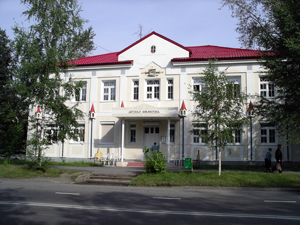

Детская библиотека
Есть в нашем городе красивый и уютный Дом детской книги, окна которого освещены чтением.. Это детская библиотека. Каждое утро открывает она свои двери и наполняется голосами ребят. А это значит, что читателю нужна книга, или слово, или беседа, или его ждет встреча с другом..., а может, ему просто нужно побыть в тишине. Хотя тишина в нашей библиотеке явление редкое. Необъяснимая и бесспорная энергия книг заряжает здесь аккумуляторы любознательной детской души.
Центральная городская детская библиотека начинает свою историю с 1958 года, когда исполкомом городского Совета депутатов трудящихся принимается решение: «Организовать городскую детскую библиотеку, подчинив ее отделу культуры горисполкома». А ровно через 30 лет библиотеке было присвоено имя Аркадия Петровича Гайдара. Так и зовемся теперь — Гайдаровкой!